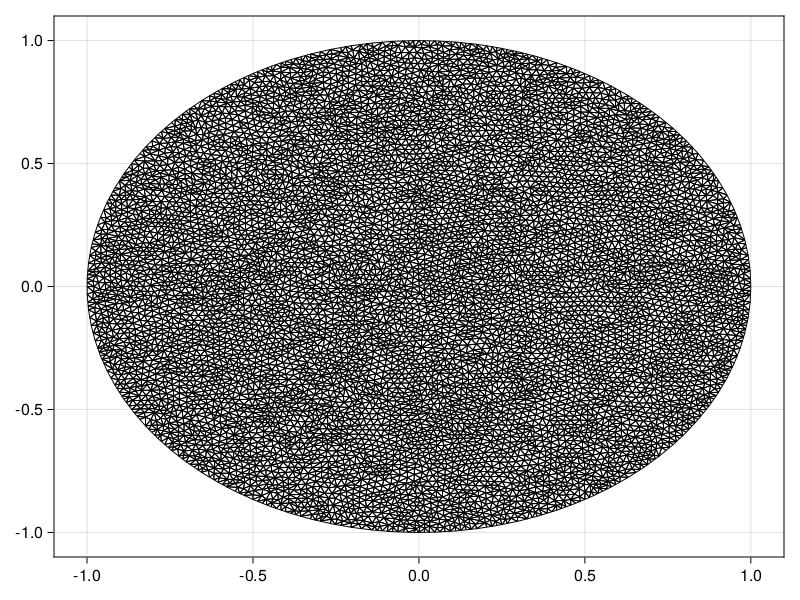

Reaction-Diffusion Equation with a Time-dependent Dirichlet Boundary Condition on a Disk
In this tutorial, we consider a reaction-diffusion equation on a disk with a boundary condition of the form $\mathrm du/\mathrm dt = u$:
\[\begin{equation*} \begin{aligned} \pdv{u(r, \theta, t)}{t} &= \div[u\grad u] + u(1-u) & 0<r<1,\,0<\theta<2\pi,\\[6pt] \dv{u(1, \theta, t)}{t} &= u(1,\theta,t) & 0<\theta<2\pi,\,t>0,\\[6pt] u(r,\theta,0) &= \sqrt{I_0(\sqrt{2}r)} & 0<r<1,\,0<\theta<2\pi, \end{aligned} \end{equation*}\]
where $I_0$ is the modified Bessel function of the first kind of order zero. For this problem the diffusion function is $D(\vb x, t, u) = u$ and the source function is $R(\vb x, t, u) = u(1-u)$, or equivalently the force function is
\[\vb q(\vb x, t, \alpha,\beta,\gamma) = \left(-\alpha(\alpha x + \beta y + \gamma), -\beta(\alpha x + \beta y + \gamma)\right)^{\mkern-1.5mu\mathsf{T}}.\]
As usual, we start by generating the mesh.
using FiniteVolumeMethod, DelaunayTriangulation, ElasticArrays
r = fill(1, 100)
θ = LinRange(0, 2π, 100)
x = @. r * cos(θ)
y = @. r * sin(θ)
x[end] = x[begin]
y[end] = y[begin] # make sure the curve connects at the endpoints
boundary_nodes, points = convert_boundary_points_to_indices(x, y; existing_points=ElasticMatrix{Float64}(undef, 2, 0))
tri = triangulate(points; boundary_nodes)
A = get_total_area(tri)
refine!(tri; max_area=1e-4A)
mesh = FVMGeometry(tri)FVMGeometry with 8131 control volumes, 15935 triangles, and 24065 edgesusing CairoMakie
triplot(tri)
Now we define the boundary conditions and the PDE.
using Bessels
BCs = BoundaryConditions(mesh, (x, y, t, u, p) -> u, Dudt)BoundaryConditions with 1 boundary condition with type Dudtf = (x, y) -> sqrt(besseli(0.0, sqrt(2) * sqrt(x^2 + y^2)))
D = (x, y, t, u, p) -> u
R = (x, y, t, u, p) -> u * (1 - u)
initial_condition = [f(x, y) for (x, y) in each_point(tri)]
final_time = 0.10
prob = FVMProblem(mesh, BCs;
diffusion_function=D,
source_function=R,
final_time,
initial_condition)FVMProblem with 8131 nodes and time span (0.0, 0.1)We can now solve.
using OrdinaryDiffEq, LinearSolve
alg = FBDF(linsolve=UMFPACKFactorization(), autodiff=false)
sol = solve(prob, alg, saveat=0.01)retcode: Success
Interpolation: 1st order linear
t: 11-element Vector{Float64}:
0.0
0.01
0.02
0.03
0.04
0.05
0.06
0.07
0.08
0.09
0.1
u: 11-element Vector{Vector{Float64}}:
[1.2514323512504983, 1.2514323512504983, 1.2514323512504983, 1.2514323512504983, 1.2514323512504983, 1.2514323512504983, 1.2514323512504983, 1.2514323512504983, 1.2514323512504983, 1.2514323512504983 … 1.251242484475135, 1.244356557889924, 1.1227594602529802, 1.2426847902232694, 1.127649110319484, 1.0306976522168672, 1.0646986685836721, 1.0634277772038174, 1.018137465073331, 1.0196316842916342]
[1.2640099882167484, 1.2640099882167484, 1.2640099882167484, 1.2640099882167484, 1.2640099882167484, 1.2640099882167484, 1.2640099882167484, 1.2640099882167484, 1.2640099882167484, 1.2640099882167484 … 1.2638182131677411, 1.2568431861696767, 1.1340497188550736, 1.2551661005705552, 1.1389953030728508, 1.0410560965153652, 1.0753579269816669, 1.0741072636837359, 1.028376652695774, 1.0298850458119893]
[1.2767134957477146, 1.2767134957477146, 1.2767134957477146, 1.2767134957477146, 1.2767134957477146, 1.2767134957477146, 1.2767134957477144, 1.2767134957477146, 1.2767134957477146, 1.2767134957477144 … 1.276519793328008, 1.2695020733878981, 1.1454441415237553, 1.267786991906774, 1.1504319631895352, 1.0515209458771977, 1.086211696063382, 1.0849091037995293, 1.0387077645966734, 1.0402302651715705]
[1.2895474565777711, 1.2895474565777711, 1.2895474565777711, 1.2895474565777711, 1.2895474565777711, 1.2895474565777711, 1.2895474565777711, 1.2895474565777711, 1.2895474565777711, 1.2895474565777711 … 1.2893518069950904, 1.282270795866559, 1.1569586212382985, 1.28051911886875, 1.161987921036346, 1.0620917748400718, 1.097135047511236, 1.095810131361459, 1.04914879495125, 1.0506824404541644]
[1.302510590685592, 1.302510590685592, 1.302510590685592, 1.302510590685592, 1.302510590685592, 1.302510590685592, 1.3025105906855923, 1.302510590685592, 1.302510590685592, 1.3025105906855923 … 1.3023129743418245, 1.2951652198042705, 1.1685897331878368, 1.2934180738216656, 1.1736853094416915, 1.0727692514085703, 1.1081810604169238, 1.1068373406203582, 1.0596946269449539, 1.0612522969983809]
[1.315600757436223, 1.315600757436223, 1.315600757436223, 1.315600757436223, 1.315600757436223, 1.315600757436223, 1.3156007574362232, 1.315600757436223, 1.315600757436223, 1.3156007574362232 … 1.315401155057983, 1.308092067930585, 1.180342558960095, 1.306426075513706, 1.1855167040253893, 1.0835575820187158, 1.119216996814358, 1.1179742960046704, 1.0703611452288024, 1.0719394503080968]
[1.3288200056164565, 1.3288200056164565, 1.3288200056164565, 1.3288200056164565, 1.3288200056164565, 1.3288200056164565, 1.3288200056164567, 1.3288200056164565, 1.3288200056164565, 1.3288200056164567 … 1.3286183976194454, 1.3209759032543351, 1.1922280918235417, 1.3195732959223392, 1.197532345525649, 1.0944621051490282, 1.1301550923331531, 1.1292370540563692, 1.0811658285122876, 1.082772339544216]
[1.3421713198850864, 1.3421713198850864, 1.3421713198850864, 1.3421713198850864, 1.3421713198850864, 1.3421713198850864, 1.3421713198850869, 1.3421713198850864, 1.3421713198850864, 1.3421713198850869 … 1.3419676862322494, 1.334059041559598, 1.2042258402404082, 1.3328471407461004, 1.2096413889032587, 1.1054708571405683, 1.1412846155856475, 1.1406037483285987, 1.092065587586659, 1.0936976321471237]
[1.3556576004879892, 1.3556576004879892, 1.3556576004879892, 1.3556576004879892, 1.3556576004879892, 1.3556576004879892, 1.3556576004879897, 1.3556576004879892, 1.3556576004879892, 1.3556576004879897 … 1.355451920702333, 1.3476061798596624, 1.2163128159441927, 1.3462287199681262, 1.2217406682274863, 1.116570579202179, 1.1529205268109424, 1.152048583111077, 1.103012885579139, 1.1046550216111064]
[1.369280611306188, 1.369280611306188, 1.369280611306188, 1.369280611306188, 1.369280611306188, 1.369280611306188, 1.3692806113061882, 1.369280611306188, 1.369280611306188, 1.3692806113061882 … 1.3690728646431467, 1.3617042649196764, 1.2284821642907642, 1.3597123096423422, 1.2337966275828778, 1.1277578381824789, 1.1651666855371683, 1.1635641886794394, 1.1139928184891434, 1.11562519813006]
[1.3830373380729708, 1.3830373380729708, 1.3830373380729708, 1.3830373380729708, 1.3830373380729708, 1.3830373380729708, 1.3830373380729704, 1.3830373380729708, 1.3830373380729708, 1.3830373380729704 … 1.3828275042451226, 1.3752288685374692, 1.2408399046596914, 1.3733862817840792, 1.246254246445904, 1.139099037768084, 1.1766885330692445, 1.1752725518719527, 1.1252159145082867, 1.1268715605720998]fig = Figure(fontsize=38)
for (i, j) in zip(1:3, (1, 6, 11))
ax = Axis(fig[1, i], width=600, height=600,
xlabel="x", ylabel="y",
title="t = $(sol.t[j])",
titlealign=:left)
tricontourf!(ax, tri, sol.u[j], levels=1:0.01:1.4, colormap=:matter)
tightlimits!(ax)
end
resize_to_layout!(fig)
fig
Just the code
An uncommented version of this example is given below. You can view the source code for this file here.
using FiniteVolumeMethod, DelaunayTriangulation, ElasticArrays
r = fill(1, 100)
θ = LinRange(0, 2π, 100)
x = @. r * cos(θ)
y = @. r * sin(θ)
x[end] = x[begin]
y[end] = y[begin] # make sure the curve connects at the endpoints
boundary_nodes, points = convert_boundary_points_to_indices(x, y; existing_points=ElasticMatrix{Float64}(undef, 2, 0))
tri = triangulate(points; boundary_nodes)
A = get_total_area(tri)
refine!(tri; max_area=1e-4A)
mesh = FVMGeometry(tri)
using CairoMakie
triplot(tri)
using Bessels
BCs = BoundaryConditions(mesh, (x, y, t, u, p) -> u, Dudt)
f = (x, y) -> sqrt(besseli(0.0, sqrt(2) * sqrt(x^2 + y^2)))
D = (x, y, t, u, p) -> u
R = (x, y, t, u, p) -> u * (1 - u)
initial_condition = [f(x, y) for (x, y) in each_point(tri)]
final_time = 0.10
prob = FVMProblem(mesh, BCs;
diffusion_function=D,
source_function=R,
final_time,
initial_condition)
using OrdinaryDiffEq, LinearSolve
alg = FBDF(linsolve=UMFPACKFactorization(), autodiff=false)
sol = solve(prob, alg, saveat=0.01)
fig = Figure(fontsize=38)
for (i, j) in zip(1:3, (1, 6, 11))
ax = Axis(fig[1, i], width=600, height=600,
xlabel="x", ylabel="y",
title="t = $(sol.t[j])",
titlealign=:left)
tricontourf!(ax, tri, sol.u[j], levels=1:0.01:1.4, colormap=:matter)
tightlimits!(ax)
end
resize_to_layout!(fig)
figThis page was generated using Literate.jl.